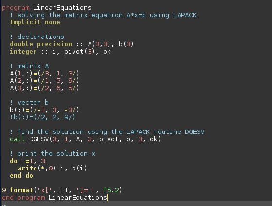

Fortran Programming
Contents
Fortran Programming¶

Resources and Textbooks Used¶
In this section we will be programming in Fortran using examples and techniques found in these books:
“Guide to Fortran 2008 Programming” by Walter S.Brainerd¶
This book may be purchased here:
Amazon page to purchase “Guide to Fortran 2008 Programming” by Walter S. Brainerd”
“Introduction to Programming Using Fortran” from the Open Textbook Library¶
This online resource may be obtained here:
Introduction to Programming using Fortran
“Modern Fortan” by Milan Curcic (Manning Publications)¶
This book may be purchased from: Modern Fortran: Building Efficient Parallel Applications
Project Code on Github¶
Project code is available at the following Github repositories:
Worked Examples in Guide to Fortran 2008 Programming
Worked Examples in Introduction to Programming Using Fortran